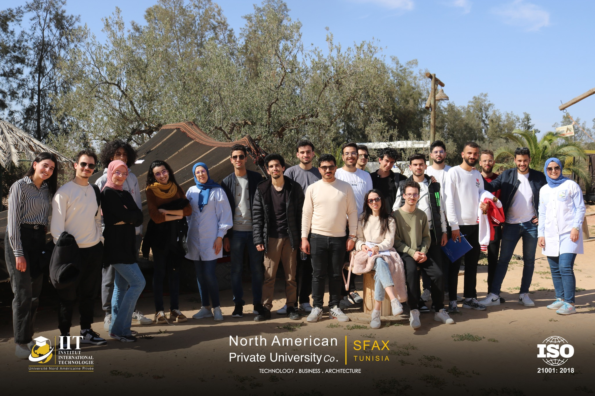
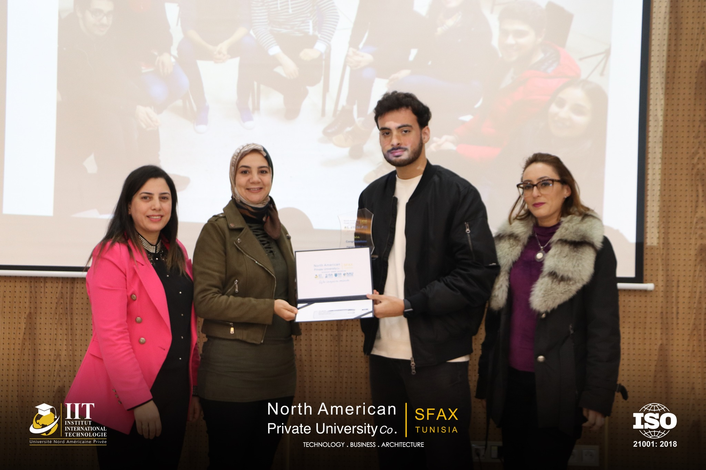

Une expérience unique
J'ai eu une expérience exceptionnelle à l'Institut International de Technologie. Les ressources et les opportunités pour apprendre et grandir sont incroyables. Les professeurs sont très compétents, et l'environnement d'apprentissage est très engageant.
La vie estudiantine
Grâce à mon expérience à IIT, j'ai pu acquérir des compétences précieuses et travailler sur des projets significatifs. L'université offre un environnement d'apprentissage stimulant et une grande variété de clubs et d'activités pour les étudiants.
